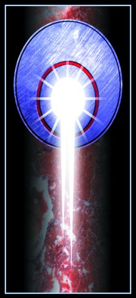

1.House Davion(戴维恩家族)
联邦合众国（The Federated Commonwealth,原Federated Suns）
领导人：Victor Steiner Davion王子
国家所在地：新Avalon行星
加入新星际联盟的时间：3058年
或许在3056年之后的几年时间里发生的最重大的事件就是Joshua Marik的死亡，他是自由世界联盟（Free Worlds League）最高军事指挥官(Captain-General)Thomas Marik的唯一继承人。多年以来，这个年轻的继承人一直以治疗先天性白血病为由而被软禁在联邦合众国设立在新Avalon行星上的科学研究中心(New Avalon Insitute Of Science，简称Nais)中，这样作是为了将Joshua Marik作为人质，以防止Thomas Marik对联邦合众国进行军事行动。
因此当这个可怜的继承人因为绝症而死去之后，Victor Steiner-Davion王子封锁了科学研究院并隐瞒了这个消息。但堪培拉联邦的总理大臣廖孙致在不久之后就发现了Davion王子的阴谋,并向 Thomas Marik提议成立Marik和Liao的攻守同盟，集结双方的军事力量发动对Sarna地区(Sarna March)的军事行动，给背叛的Davion王子一些惩罚,并夺回被他占领的、曾属于Marik和Liao家族的领地。
3057年，Marik和Liao的联军开始向Sarna地区发动进攻，在Marik使用高薪雇佣来的雇佣兵的帮助下，Liao的部队很快收复了许多原来属于他的领地；同样Marik的部队也和Liao军团一样获得了辉煌的胜利，占领了数个原来属于自由世界联盟的行星。
几乎就在同一时间内，女首领Katrina Steiner-Davion宣布从Victor Steiner-Davion王子统治的国家中独立出来，在它原有领地的基础上成立了一个名为天琴同盟国(Lyran Alliance)的新国家；Katrina还宣布了天琴同盟国将在战斗中保持中立,
并迅速的将部署在原联邦合众国地带的部队迅速撤回。于是Marik趁此机会和Katrina的新政权达成了协议，在天琴行星附近的地带取得了暂时的和平。
由于Katrina这个出乎意料之外的行动，她已经从血缘关系和政治关系上与联邦合众国及Davion家族彻底分裂了；这突如其来的叛变以及天琴行星军队的迅速撤退，使得Sarna March地区的局势变得更加混乱不堪。失去对这一区域的控制权的结果就是联邦合众国的军队将难以打开通往天琴同盟国的道路，如果强行攻打的话只会为此付出惨重的代价。许多战事的观察员在刚开始的时候都认为Katrina将会和她的新邻居--自由世界联盟结成攻守同盟，但到目前为止她都没有这么做，而是继续保持中立。
Victor Steiner-Davion王子并没有放弃与天琴同盟国的谈判,他始终认为天琴同盟国的领土依然是属于联邦合众国不可分割的一部分。然而在另一方面,天琴同盟国的首席执政官Katrina对属于Victor Steiner-Davion王子的联邦合众国的另外一半领土并没有多大的兴趣，她真正关心的是附近混乱地区(Chaos March)的事务。女执政官在坚决地实行她的政策以巩固和发展她在天琴同盟国的执政权；但是同盟国中的几个重要区域的行政官是否真的对这位女执政官忠心耿耿却很值得商榷。反而是历史上一向有分离主义传统的重工业地区Skye的行政长官却给了Katrina以全力的支持。同时Katrina还得到了来自 Donegal地区（Donegal March）的强力支持。
在另一方面，沿着天琴和自由世界联盟领土的边界地区的许多行政区域，那里的行政长官却非常怀念着当时Victor Steiner-Davion王子给予他们在政治和军事上的大力支持，以帮助他们对抗好战的自由世界联盟对他们管辖区域发动的或明或暗的侵略。他们不愿相信Thomas Marik许下的、不再扩张自由世界联盟在第四次“继承战争”后确定下来的疆域、不再发动任何形式的侵略战争的诺言；一旦Thomas Marik的军队有任何企图吞并他们领土的倾向或行动，他们就会毫不犹豫加入到Victor Steiner-Davion王子一方以寻求支援和保护。
现在的局势是何等的微妙。
星系中的雇佣军们认为，天琴同盟国的实力究竟如何还是一个未知数，可能只是一个空壳也说不定；而作为一个国家的领导人，Katrina Steiner-Davion执政官的能力在很大程度上并不能对国家机器驾驭自如，而且很多天琴同盟国的人民认为她只不过是一个权欲熏心的险毒女人罢了；正是因为这两个原因，许多投机主义者趁机混进了Katrina Steiner-Davion执政官的雇佣政府，并趁着现在的混乱状态为所欲为、中饱私囊；对于雇佣军们来说，唯一让他们感到欣慰的是卡德丽娜时常支付极其优厚的酬金以支持他们的各种行动--尽管这个行动可能并不具备严重的危险性。
绝大部分的这些雇佣军部队都非常知道如何“见风使舵”忘记Davion家族曾经是他们最大的主顾，因此他们在战场上时常是Victor Steiner-Davion王子的军队最强硬的敌人。许多天琴同盟国指派的任务中也包括了一些守备和保护的工作，因为Katrina执政官的公众地位是作为一个调停人出现的，所以这个职位允许她作一些职权以外的事情--这当然就需要唯利是图的雇佣军的保护
了。
2.House Liao(廖氏家族)
堪培拉联邦（The Cappelan Confederation）
领导人：Sun-Tzu Liao总理大臣
国家所在地：Sian行星
加入新星际联盟的时间：3058年
3056年，自由世界联盟的最高军事指挥官Thomas Marik的继承人Joshua Marik在新Avalon科学研究中心不幸病逝。于是，Sun-Tzu Liao向痛失了作为人质软禁在新Avalon科学研究中心中的继承人之后的Thomas Marik提出了一项建议，组成联合军队发动武装侵略以报复Victor Steiner-Davion王子并夺取Davion家族手中曾属于Liao和Marik的领土。Sun-Tzu Liao已经等待这个机会很久、很久了。
3057年，Liao和Marik的联合军队入侵了Sarna地区，同时原本属于Davion家族的Katrina却宣布了天琴地区的独立，并成立了中立的天琴同盟国。很快联邦合众国控制了边界地区的局势，Marik也愿意和Katrina保持部分的和平相处。
但是，这样做的结果将是导致自由世界联盟无法再对Victor Steiner-Davion王子的领地作进一步的进攻，同时来自堪培拉联邦的进攻也因此而被大大阻延了。既然无法通过军事行动来获得更多的领土和战利品，总理大臣Sun-Tzu Liao便开始给他的“战争之光游击队”(Zhanzheng De Guang
Guerillas)提供大量的资金援助以帮助他们攻打混乱地区的其它行星；不过，显然这位总理大臣的运气并不怎么好，所以他一直都期望能够在后来的战争中扭转不利的局势和运气。
堪培拉联邦需要大量的雇佣军以满足各种类型任务的需要，因为许多无法用正规军完成的任务，完全可以交给这些唯利是图的家伙们去解决。总理大臣Sun-Tzu Liao的侵略军现在已经将Sarna地区的领土分割得四分五裂，但是他还是需要更多的军队来完成他挑起的战争。
同样,堪培拉联邦国内也需要更多的部队来增强和扩充他们与联邦合众国的边界上的防御力量；而且他们还需要力量来对付在混乱地区中新成立的国家―特别是对付Sama Supremacy。
3.House Kurita(库里塔家族)
天龙联合集团（The Draconis Combine）
领导人：Theodore Kurita首相
国家所在地：Luthien行星
加入新星际联盟的时间：3058年
就在星际联盟其它各个拥有继承权的正忙碌于相互对抗的“继承战争”的时候，天龙联合集团却一直致力于寻找氏族敌人的母星；而当堪培拉联邦和自由世界联盟携手攻打联邦合众国，使得好不容易安定下来的局面又再度陷入了战争的炮火和硝烟之中。这时Kurita家族的首领决定在战争中保持中立的地位，在星际联盟和氏族的“图凯伊德停战协议（Truce Of
Tukayyid）”签订之后，Kurita家族一直致力于发展适合内天体的军事力量，其中包括适应在各种场合下和敌人作战的“次世代机甲战士（OmniMech）”的研制和开发、适应新形势下战斗要求的高技术高性能武器的应用等。当星际联盟的其它国家正在为内忧外患而头疼万分的时候，天龙联合集团的首相Theodore Kurita却雇佣了大量的雇佣兵来保护他们在外围地带的各个军事基地，在外围地带安插这些军事基地的首要目的就是寻找氏族的所在地。
天龙联合集团继续大量雇佣各种雇佣兵为完成他们许多不可告人的秘密任务。但是，因为近来动荡不安的局势--天琴同盟国的宣布独立、由于持续的战争和侵略导致联邦合众国和天龙联合集团的共同边界变得更加不稳定等，都迫使首相Theodore Kurita雇佣更多的雇佣兵部队来帮助他的军队以保证天龙联合集团领土的安全，几乎这些任务都是保卫领土和维护地区安全的工作。而
最近有流言却说天龙联合集团要在混乱的边界地区再次挑起事端，并且现在已经雇佣了几支为数不多但绝对是精锐的部队对这个混乱地区发动了“外科手术式”的进攻（Surgical Strikes）；这使得联邦合众国、自由世界联盟和堪培拉联邦之间的战争局势变得更加得扑朔迷离，因为第三方势力的介入势必导致原有势力均衡被打破，很有可能形成新的势力均衡或导致局势走向更加混乱的局面。不过，到目前为止还没有任何确切的证据来证明这个谣言的正确性。
联邦合众国和天琴同盟国之间发生的分裂事件给执政的Victor王子出了一道不小的难题，混乱的边界地区的纠纷也使得原本和平安宁的气氛荡然无存。在天琴同盟国的执政官Katrina宣布独立的时候也曾经将Lyons Thumb地区作为天琴同盟国的一部分而并入他们的版图，因为这个地区和天龙联合集团的关系十分密切，所以在后来Liao和Marik联合军队的双重夹击之下，Katrina
不得不向Lyons Thumb地区附近的天龙联合集团求救了。作为对这位女行政官求救行动的回应，执掌天龙联合集团政权的首相Theodore Kurita决定说服通讯之星的领导人一起组建一支强大联合军团并开赴Lyons Thumb地区，以维和部队（Peacekeeping Forces）的身份来保护天琴同盟国的安全。作为Katrina和Victor王子方面自然是很欢迎这种举措了，因为维和部队保护了天琴的领土，在另一个意义上讲就是阻断了Liao和Marik联军进攻的路线，保护了联邦合众国的安全；而这样执政官Katrina也可以理直气壮地拒绝外国军队（Liao 和Marik联军）通过他们的领土了。
将近有九个团的维和部队进驻了Lyons Thumb以及周边的地区；对于驻扎在附近的天琴同盟国的军队来说，这些"维和部队"实在很不可靠；毕竟是在自己的家门口囤积着别人的军队，执政官 Katrina可不愿意拿自己国家的领土来和这些并不值得信任的维和部队冒险，因为这些装备精良的维和部队很可能会铤而走险对她的国家发动攻击。但是，表面上的执政官Katrina并没有表示出任何对维和部队的不欢迎。反之，她却假装出一付老大不愿意的样子将自己的部队以中立国家的名义派遣到维和部队中，以对首相Theodore Kurita的联合军队进行监视并随时准备开战。
与此同时，通讯之星的领导人也雇佣了更多的雇佣兵部队进驻了Lyons Thumb地带，以对该地区附近的天琴同盟国和联邦合众国的军队进行监视，并且对进出该地区的作战或运输飞船进行细致的监视和检查，因为通讯之星同样也信不过这些国家--甚至包括他们暂时的盟友--天龙联合集团。
4.House Marik(马里科家族)
自由世界联盟（The Free Worlds League）
领导人：最高军事指挥官Thomas Marik（该国家的元首已遭到了流放）
国家所在地：Atreus行星
加入新星际联盟的时间：3058年
3056年由于继承人的死亡而引起了Thomas Marik将军的极大愤怒，于是在3057年，Thomas Marik将军在堪培拉联邦的总理大臣Sun-Tzu Liao的建议下组织了强大的星际联军向联邦合众国的Victor王子宣战；同时联邦合众国的贵族Katrina宣布了天琴地区的独立并成立了天琴同盟国，于
是周边的边界地带开始变得动荡不安起来。Thomas Marik将军发誓一定要占领联邦合众国，以讨还失去继承人的血债。
5.House Steiner(斯戴纳家族)
天琴同盟国（The Lyran Alliance,原Lyran Commonwealth）
领导人：执政官Katrina Steiner-Davion
国家所在地：Tharkad行星
加入新星际联盟的时间：3058年
由于出乎意料的独立使得联邦合众国Victor王子的实力一下子被大大削弱了；但是从另一个方面讲，天琴同盟国的中立也有效地遏制了Liao和Marik联军的进一步入侵，这使得Victor王子可以暂时松一口气。
现在天琴同盟国所处的位置十分微妙，因为他们所在的位置就在各个交战国家的战场上，一不留神就成了残酷战争的炮灰，可以说他们正处在一个巨大的火药桶上；但是天琴同盟国也不是毫无准备，优秀的军事力量加上为数不少的雇佣兵，至少可以让他们在战斗中不会吃太大的亏。

第二个是Word of Blake
6.通讯之星(Comstar)
领导人：军事圣唱者Anastasius Focht
国家所在地：地球（在“布雷克之道”运动爆发之后，通讯之星又将军事基地转移到Tukayyid行星上）
加入新星际联盟的时间：3058年
公元3058年2月28日，“布雷克之道（Word of Blake）”运动终于爆发了，那一天特别的具
有象征意义，因为那正好是著名的Jerome Blake取得对地球的控制权276周年的纪念日,这也是在通讯之星大主教(Primuses)Sharilar Mori在官方通过将地球（Terra）改名之后
的恰好第38个月。
3053年,一个名为“布雷克之道”的恐怖组织开始猖獗的活动起来，他们四处蓄意制造各种爆炸和凶杀的恐怖活动，让人民生活在水深火热的不安感中。“布雷克之道”与半人马枪骑兵军团(Centauri Lancers)联手破坏了希尔顿岛(Hilton head island,另一个Comstar的军事基地)和桑赫斯特（英国著名的陆军军官学校所在地）的皇家军事学院，同时还给
Comstar警卫队（ComGuard）第201军团造成了极其严重的损失。随着恐怖组织的进攻进一步激化，负责地球防务的圣唱者Lisa Koenigs-Cober军事长官指挥手下摧毁了任何具有军事价值的目标，随后与大主教Mori、主席团和卫队的残部一同撤离。现在只剩下少量的通讯之星警卫队队员在苦苦支撑着来自对手的疯狂进攻。
当叛乱的消息到达最高军事指挥官Anastasius Focht那里时，他恰好正在前往参加一个军事会议的道路上；这个军事会议集结了圣艾文斯合众国（St. Ives Compact）、联邦合众国和天龙联合集团的各个军事首领，地点是在签订和平协议的Tukayyid行星上，所以Anastasius Focht将军决定暂时不对“布雷克之道”组织即时发动进攻，因为此时氏族的军队随时可能撕毁和内天体各个国家签订的和平条约而对地球发动进攻，贸然花费大量兵力去镇压叛乱的话，还不如将保卫地球的“任务”交给这些叛乱者们。
在“布雷克之道”组织的三个军团为了维护地球的控制权而在敌人的炮口下烟消云散之后，Anastasius Focht将军的这个决定看起来是十分正确而明智的，特别是有流言说“布雷克之
道”居然花费大价钱雇佣部队来充实他们的实力以保卫地球，这样的话恐怖分子不但要付出人力物力上的代价，而且还会损失大量的金钱。因为地球的总部被叛乱的恐怖分子军队所占领了，Anastasius Focht将军被迫将他手下的军事基地迁移到自由罗萨利格共和国的Tukayyid行星上，并在新的基地上部署好作战准备，以便随时抵御氏族的军队可能对内天体发动的进攻。
正当通讯之星的部队继续为防御氏族的进攻而进一步加强军事实力时，“布雷克之道”也进一步加强他们的防御力量并等待着通讯之星对地球的恐怖分子发动反击，这将是他们取得胜利的最好时机，但是显然通讯之星的防御战队却很“沉得住气”。作为人类的摇篮和家乡，地球被“布雷克之道”占领之后引起了整个内天体各个国家的不安。随着通讯之星撤离了地球而“布雷克之道”取得了对地球的控制权，内天体中具有继承权的其它国家很快就意识到，昔日在地球上横行霸道的炸弹恐怖、暗杀和窃取高科技机密和商业机密的各种恐怖活动将在星系中再一次死灰复燃。对Jerome Blake预言的扭曲理解使得“布雷克之道”作出了许多令人发指的行动，他们给星系中各个国家带来的威胁甚至比来自氏族的威胁更大。
其他势力
这五个庞大的家族之间除了相互勾心斗角和抵御来自外界--氏族--的威胁之外，在内天体中还有其它相对微弱的小力量，比如星际盗贼、宇宙海盗等；此外还有一些外围的边缘地区利用他们不受注意有利位置而加快了军事和经济实力的积累，他们也逐渐成为不容小觑的力量了。
这些相对弱小的力量当中，像自由罗萨利格共和国在氏族军队入侵的过程中就从后方牵制了入侵的敌军；而圣艾文斯合众国整个曾经是属于堪培拉邦联的一部分领土，它的领导人果断从堪培拉联邦脱离出来并和廖氏家族的强大力量玩起了“猫捉老鼠”的“游戏”，这是一场疯狂的赌博，但是作为“猫”一方的Liao家族似乎无法抓住看起来比它弱小许多的“小老鼠”。此外还有不计其数的雇佣军兵团，他们既是各个庞大家族的救命稻草，同时也是各个家族毁灭的祸根，所以这许多军队中好多已经不仅仅是“雇佣军”（Soldiers Of Fortune），在一定程度上他们也能够决定星系中各个势力均衡的结局。这些部队中一些强大的兵团，诸如“凯尔猎犬（Kell Hounds）”、“北风高地人（Northwind Highlanders）”和“狼骑兵（Wolf＇s Dragoons）”等，他们现在都已经拥有了和内天体中的其它领主一样的力量，已经成为星系历史变革中的一个重要组成部分了。
氏族方面
自从第一次星际联盟出现危机并分崩离析之后，星际联盟防御战队的总指挥官Aleksandr Kerensky将军在心灰意冷之下率领部队的大部分主力向内天体的外界进行军事转移。
经过了漫长的星际航行之后，Aleksandr Kerensky将军和他的将士们终于在距离地球1300光年的外围地带中找到了适合驻扎的巨大基地。Aleksandr Kerensky将军和他的战士们终于在一个庞大的可居住行星群系统的边缘地带中建立起了新的军事基地，整个行星带恰好将他们从内天体的视野中隐蔽起来--这也是为何星际联盟的国家中难以寻找到氏族居住地的原因。
但是，在经过十五年的建设之后，一场不可避免的内战在这些星际的流浪者中爆发了。这场内战席卷了整个行星带，几乎把他们这十几年以来辛辛苦苦创建的基地和科研成果毁于一旦。于是Aleksandr Kerensky将军的儿子，Nicholas Kerensky将军，只好带领着他手下的士兵们被迫作出第二次战略转移；他率领着他手下的追随者们转移到了另外一个适合居住行星带以躲避这一
次新的内战。这一带被称为Strana Mechty，Nicholas Kerensky将军在这里组织并建立了新的民族，这个民族就是后来被称为“氏族（Clans）”的民族。
特殊的军事形态决定了这个社会的政治形态，崇兵尚武是这个氏族的最大特色。终于在3050年，氏族的领导人之间发生了严重政治分歧，关于是否向内天体发动进攻发生了激烈的争论，但是后来还是主战派取得了压倒性的胜利。但是随即在入侵作战中遭到了巨大挫折之后，这个矛盾被大大加剧了。
氏族是否还会对星际联盟发动新一轮的进攻？在目前看来还是个未知数。
形势报告（3059年更新）
这个报告的内容是关于当前最新的、内天体中的形势。
氏族的军团已经取得了一个巨大的“军事楔入点”并占领了天龙联合集团、自由罗萨利格共和国和联邦合众国在Steiner一方（Katrina执政官）的领土。在主权试炼所规定的时间内，氏族发誓不会对内天体进行更进一步的入侵。但是誓约并没有规定他们不能进攻天龙联合集团和天琴联盟.
随着联邦合众国的领导人Hanse Davion的逝世，Victor Davion 王子成为联邦合众国的新一任领导人，他的领导能力使他给联邦合众国带来希望的曙光
虽然在氏族入侵时天龙联合集团遭到了氏族的屠杀，但是天龙联合集团的人民却始终不肯臣服在氏族的淫威之下。在首相Takashi Kurita和他儿子Theodore Kurita的领导下天龙联合集团正在与氏族进行艰苦的战斗。
与此同时,通讯之星的内部发生了意想不到的分裂，许多部队的高级将领和政府中的高级官员都投靠了Thomas Marik的自由世界联盟--具有讽刺意味的是，Thomas Marik曾经也是来自通讯之星的高级将领。
Thomas害怕联邦合众国会对他的国家施加压力，所以他决定将他的女儿嫁给Liao家族的领导人Sun-Tzu Liao的继承人Isis；他希望通过这一场“政治联姻”能够加强Liao和Marik联盟的威慑力。但是Thomas Marik并不完全信任Isis这个女婿，相反，他热情地欢迎了来自ComStar的、前来投诚的军官，他们以近乎狂热的忠诚制约着Sun-Tzu那贪得无厌的欲望和野心。
300年后，内天体的战争仍在继续……
3025年地图(Federated Suns与Lyran Commonwealth合并前)
3056年地图(氏族入侵,Federated Suns与Lyran Commonwealth已合并成Federated Commonwealth)
{kind=link}
{kind=link}